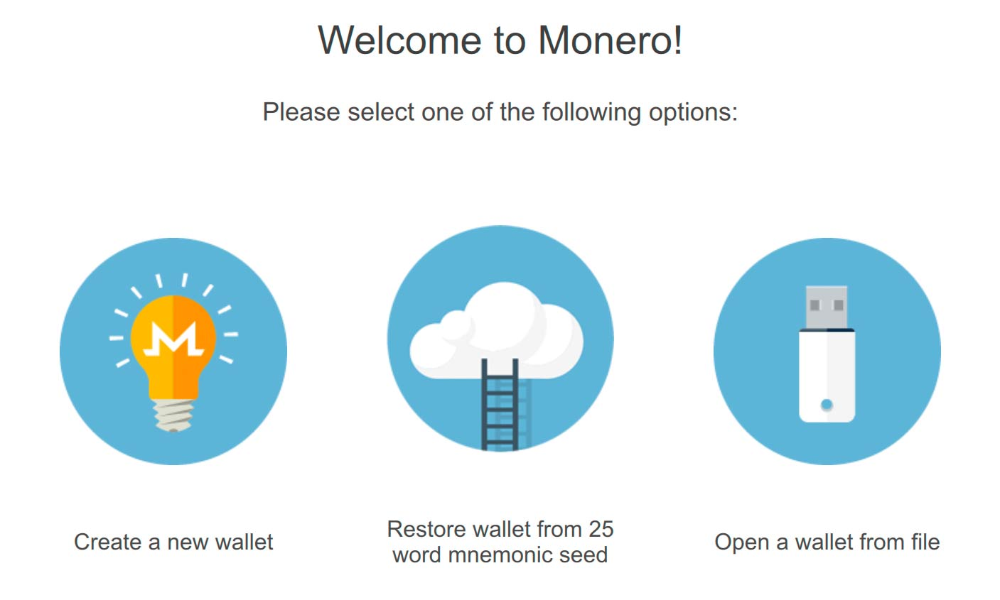
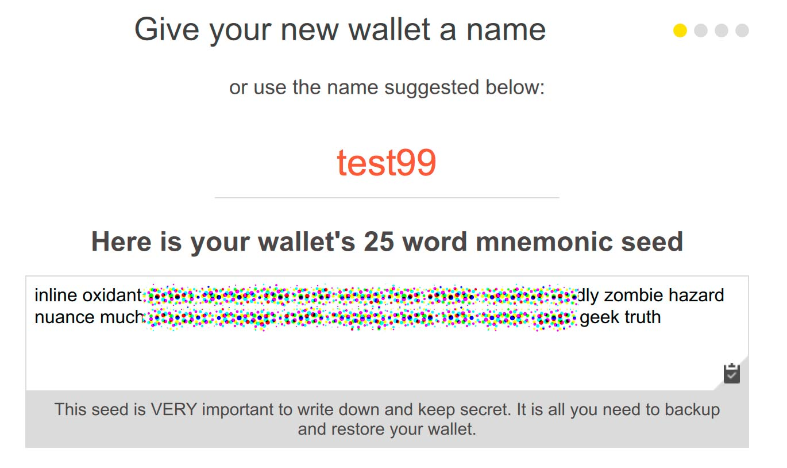
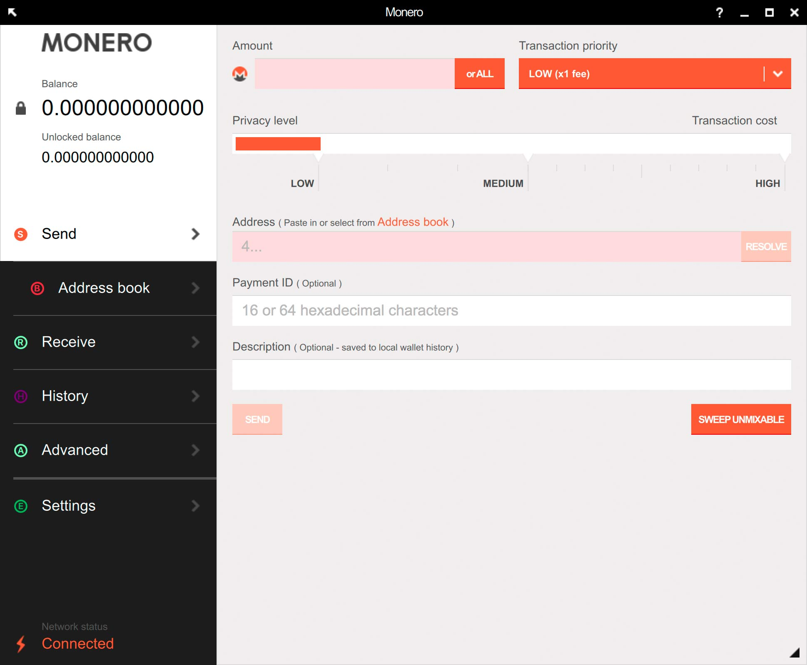
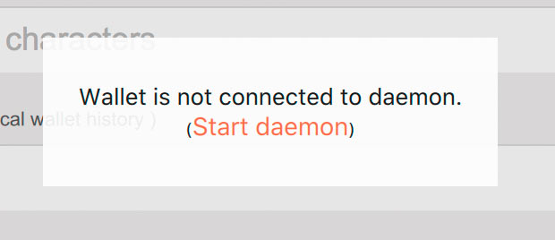
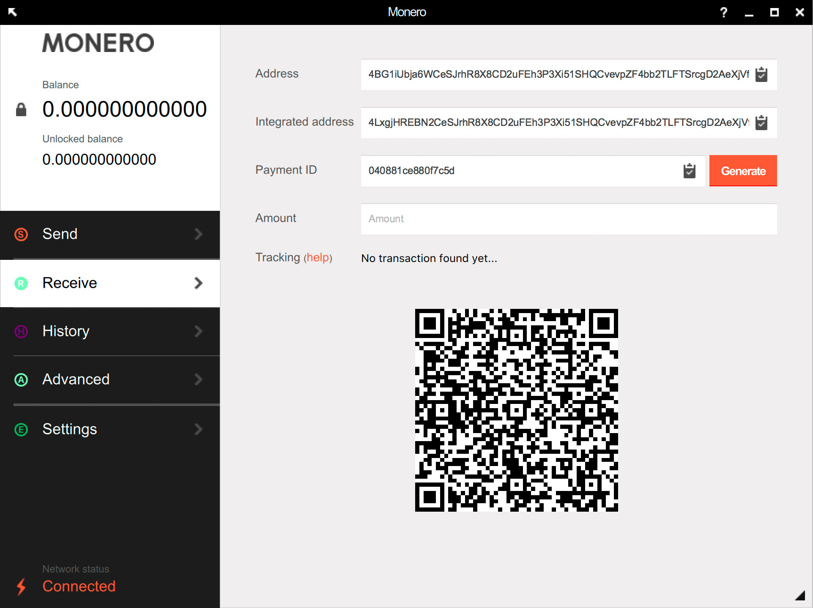
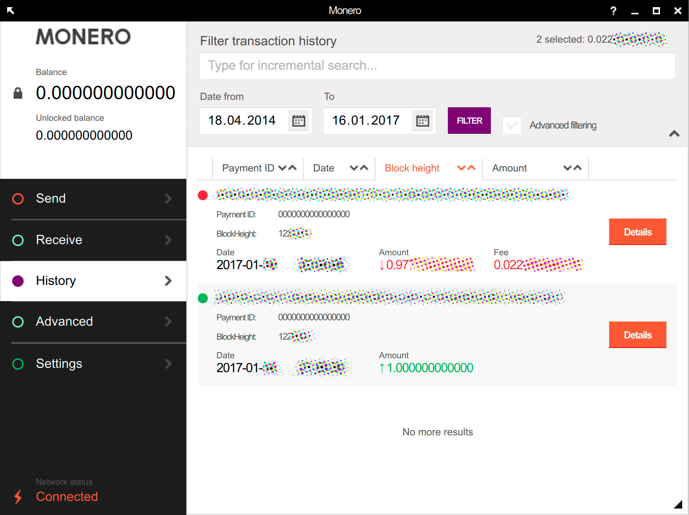

Overview
In this tutorial, we show you how to download and use the Monero GUI wallet. The download will consist of the GUI (graphical user interface) wallet application, and
the Monero daemon. The GUI wallet is used to securely store your Monero, and is what you will use to check your Monero balance and send and receive Monero.
The job of the Monero daemon is to communicate with the network to notify you of new transactions.
See our
Monero glossary for full definitions of terms used in this tutorial.
Downloading
Note that the Monero GUI wallet is in beta. Download the version for your specific operating system
here.
Creating your first wallet
After running the software you've just downloaded, you'll see this screen:

Click "create a new wallet", and then you'll be presented with this screen:

You can enter anything for the name of the wallet. This name will not be shared with anyone else, so entering your real name will not be a privacy leak.
In Monero you have a 'private key', which is what allows you to spend your funds. Your 'seed' is just a 25 word representation of your private key
which is easy for you to write down on paper. You must keep your private key a secret, or other people will be able to spend your funds. Your private key is the only thing
you need to access and spend your funds. We recommend you write down your seed on to a piece of paper and store it securely. We've created a
paper wallet tutorial
for storage of your seed.
You will then be asked to enter a password. This password will protect your wallet file on your computer. You will not need to know this password if you need to restore
your wallet using the 25 word seed.
The Monero main screen

In the top left, you'll see your balance. When you receive a payment, this number will increase. After around 20 minutes of receiving a payment, the Monero network
will have fully confirmed and verified the payment, and your "unlocked balance" will be updated to let you know that the funds are available for spending.
How long do Monero transactions take?
Starting your daemon

'Daemon' is a technical term for a program that runs in the background. Monero uses a daemon to synchronize with the Monero network to scan
for incoming transactions and to send new transactions. Your wallet with your unique seed can detect the transactions have been sent to you - this is a core part
of Monero's privacy mechanism. Click the button to start the daemon, so that your wallet can synchronize with the network.
Receiving funds

Your Monero wallet has a unique "public address". This is referred to as just "address" in the screenshot. If you want someone to send funds to you, tell them this address.
That's all you need to do - the rest of the features in the screenshot are for advanced users only (see our
glossary for
defintions of the terms you see in the screenshot).
When the funds are received, they will show up in your balance and in your history of sent and received payments.

Sending funds
If someone has given you their Monero address, also known as their "public address" or "wallet address", you can send funds to them using the "Send" button.
All you need to do is enter a Monero amount, enter their address and click "Send". Sometimes, people will ask you to specify a payment ID when you
send funds to them, so enter that into the box if they've required this from you. Monero payments are private, so if you don't specify a payment ID, the recipient
won't know who paid them unless you tell them the payment ID that you used. If you enter a description, this will only be for your own personal reference
and is not shared with anyone else.
You will almost never need to change the "transaction priority" or "privacy level" from their defaults. Monero's "adaptive block size" mechanism means the network
will automatically attempt to increase its capacity when it is dealing with increased transaction volume, so you will rarely need to prioritise your transaction.
If you do increase the transaction priority setting, note that this will increase the fee you pay to make the transaction.
The default privacy level will be more than adequate for most users. See
How Monero's privacy works. Also note that
you will almost certainly never need to use the
Sweep Unmixable button as it is designed to be used for legacy wallets.
Running the wallet on a Linux LiveCD
Warning: If you are booting to a Pendrive or LiveCD, this tutorial will not work unless you have at least 16GB of RAM available for storage of the blockchain.
To clarify, this RAM requirement ONLY applies to Pendrive or LiveCD installations and not to the majority of people with regularly installed operating systems. If you don't have this much
RAM in your laptop,
this tutorial will show you how to create a Monero wallet on a Live CD booted
machine which can talk to a trusted remote daemon.
If you have difficulty
Please read the
release notes if you are having difficulties running the Monero wallet.


 monero.how
monero.how